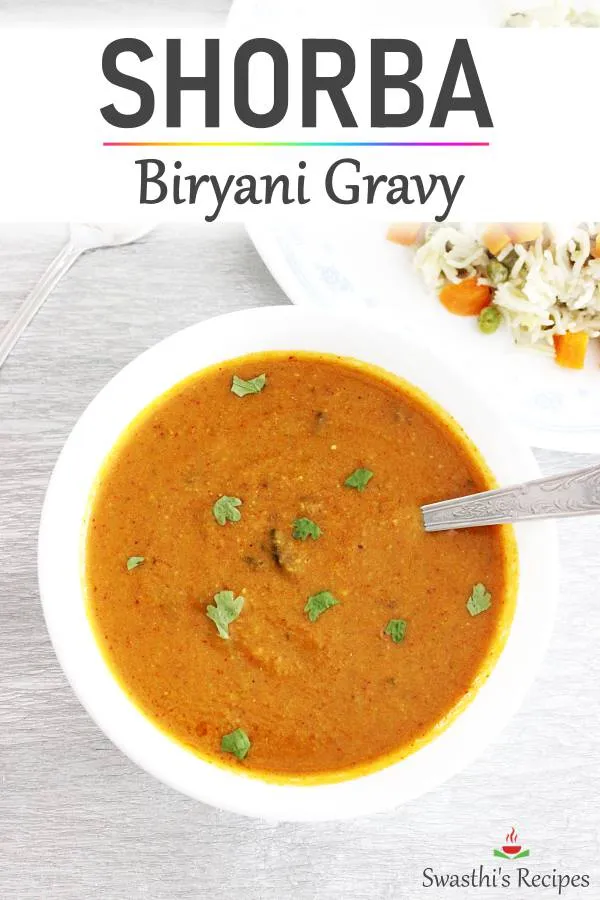

Back to Home
Shorba

Description
A traditional Algerian soup known as "Shorba," often consumed during
Ramadan or cold evenings. Rich in flavor and nutrients, it includes
lentils, chickpeas, lamb, and North African spices. Regional variations
exist across Algeria [[5]].
Ingredients
- Lamb or beef chunks
- Red lentils
- Chickpeas
- Onion (chopped)
- Garlic (minced)
- Tomato paste
- Ground cumin
- Paprika
- Cinnamon
- Olive oil
- Coriander (fresh or dried)
- Salt and pepper to taste
Steps
-
In a large pot, sauté onions and garlic in olive oil until golden.
- Add meat and brown on all sides.
- Mix in tomato paste and spices, then stir well.
- Add red lentils, chickpeas, and enough water to cover everything.
-
Bring to a boil, then simmer for 1–1.5 hours until meat and legumes are
tender.
- Taste and adjust seasoning.
- Serve hot, garnished with fresh coriander if desired.